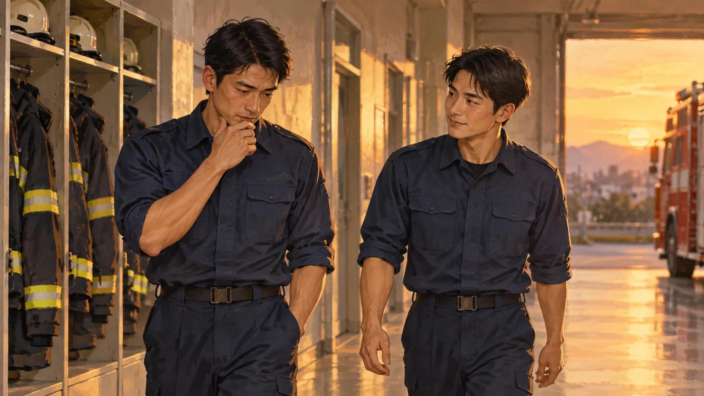

ある消防士が大事にしていること
読む目安：約1分
受け取ったものを、次へ

クリック・タップで拡大（キーボードではEnter）
仕事の中で身につけた知識や判断は、誰かから受け取ったものでもあります。先輩の言葉、仲間との経験、繰り返した訓練。その一つひとつが、今の自分を支えています。
受け取ったものは、自分の中だけにしまっておく必要はありません。次に続く人へ、分かる言葉で伝える。経験を共有することは、チームの力を少しずつ広げていきます。
経験は、渡して初めて力になる。
次の人のために
完璧な答えを残すのではなく、考えた過程や迷った点も伝える。そうした積み重ねが、次の人の一歩を支えるのだと思います。